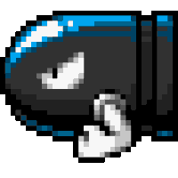 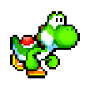
score : 0
Level Up!
monster Speed Up!
Level Up!
Auto attack up to 3000 scores
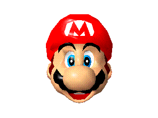
Hello, I'm Mario!
How to play
space : Jump
ctrl : weapon
special event for 500, 1500 scores.
made by. Jung HaeIm
GAME START
score : 0
Good Game!
Restart
 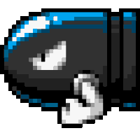
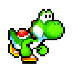
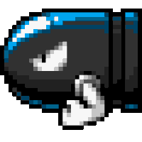
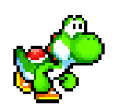
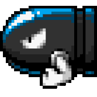
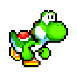
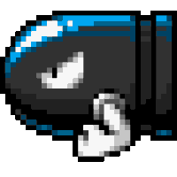
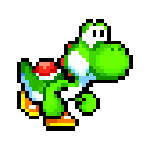